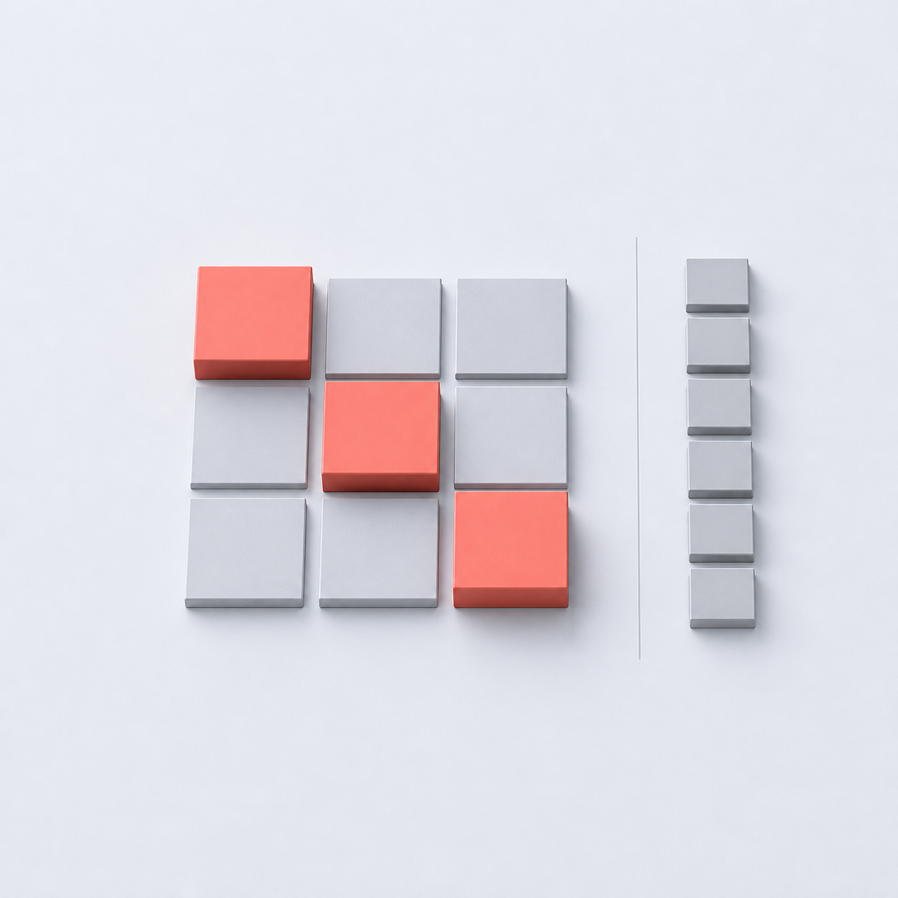

광고 자리가 6개에서 9개로 — 플레이스광고 예산을 정하는 순서
11월 5일부터 네이버가 플레이스광고 노출 개수를 늘리는 테스트를 하고 있습니다. 슬롯이 늘 때 무엇이 함께 늘어나는지, 입찰가와 하루 예산을 어떤 순서로 정하는지 정리했습니다.
네이버가 11월 5일부터 플레이스광고 노출 개수와 구성을 바꾸는 테스트를 진행하고 있습니다. 모바일 통합검색은 광고 최대 6개에서 9개, 모바일 플레이스·지도앱과 PC 지도검색은 18개에서 20개로 늘어나는 구성입니다. 대상은 음식점·뷰티·병의원·숙박·명소 등 전 업종입니다.
슬롯이 늘면 노출 기회가 늘어납니다. 동시에 같은 화면을 사려는 광고도 늘어납니다. 그래서 지금 필요한 판단은 "켤까"가 아니라 "얼마로, 어떤 방식으로, 무엇을 보고"입니다. 이 글은 세 가지를 순서대로 정리합니다.
지면별로 달라지는 것#
| 지면 | 이전 구성 | 변경 구성 |
|---|---|---|
| 모바일 통합검색 | 광고 최대 6개 | 광고 최대 9개 |
| 모바일 플레이스·지도앱 | 광고 최대 18개 | 광고 최대 20개 |
| PC 지도검색 | 광고 최대 18개 | 광고 최대 20개 |
통합검색은 목록 사이에 광고가 끼어드는 방식이라, 한 화면에 보이는 광고 수가 늘면 일반 결과는 그만큼 아래로 밀립니다. 지도 지면은 광고와 일반 결과의 배열이 바뀌는 형태입니다.
네이버는 이번 테스트로 광고 등록·랭킹·과금 기준은 기존과 동일하며, 노출 개수는 검색어와 경쟁 환경에 따라 다르고, 테스트 결과에 따라 기존 방식으로 환원될 수 있다고 밝혔습니다. 화면의 개수를 전제로 장기 계획을 세우기보다, 우리 계정의 숫자를 2주 단위로 기록하는 편이 오래갑니다.
규격부터 확인합니다#
플레이스광고는 클릭당 과금(CPC)입니다. 등록과 노출은 무료이고, 클릭이 일어날 때만 비용이 나갑니다. 광고주센터 도움말 기준으로 확인한 값은 아래와 같습니다.
| 항목 | 값 | 비고 |
|---|---|---|
| 과금 방식 | CPC | 등록·노출 무료 |
| 기본 입찰가 | 50원~5,000원 | 부가세 별도, 10원 단위 |
| 입찰가 미설정 시 | 50원으로 입찰 | 광고그룹 단위 설정 |
| 하루 예산 | 광고그룹·캠페인 단위 | 만들기 화면 기본값 3만 원 |
| 키워드 | 직접 등록 없음 | 업체·업종·지역에 자동 매칭 |
| 제외검색어 | 광고그룹 단위 | 수동 운영에서 관리 |
하루 예산 상한은 도움말에 따라 안내가 갈립니다. 한 문서는 광고그룹·캠페인 각 10만 원으로, 다른 문서는 입력 범위를 50원~30만 원으로 적고 있습니다. 어느 쪽이든 내 계정 화면에 적힌 값이 기준입니다. 화면을 확인하지 않고 남의 블로그 숫자를 그대로 쓰면 계획이 어긋납니다.
입찰가는 "한 번 클릭될 때 낼 의사가 있는 최대 금액"입니다. 실제 결제액은 그보다 낮을 수 있지만, 예산 계산은 최대값으로 보수적으로 잡는 편이 안전합니다.
자동 운영과 수동 운영#
새 광고그룹을 만들면 운영 방식을 고릅니다. 9월 16일부터 기본값은 자동 운영(ADVoost 플레이스, 베타)입니다.
| 구분 | 수동 운영 | 자동 운영 |
|---|---|---|
| 입찰가 | 직접 설정 | 설정 불가, 실시간 자동 조정 |
| 타겟팅 | 지역·매체·성별·연령·요일·시간대 | 요일·시간대만 직접 설정 |
| 소재 | 홍보문구 16자, 이미지 최대 3장 | 스마트플레이스 정보로 자동 생성 |
| 제외검색어 | 사용 가능 | 사용 불가 |
| 과금 | CPC | CPC |
| 조건 | 없음 | 이미지 1장 이상 필요, 병·의원 업종 불가 |
자동 운영의 가장 큰 위험은 하루 예산이 전액 소진될 수 있다는 점입니다. 입찰가를 직접 만질 수 없고, 자동입찰 광고그룹에는 캠페인의 하루 예산 균등 배분 옵션도 적용되지 않습니다. 손댈 시간이 없고 사진과 정보가 잘 채워져 있다면 편한 선택이지만, 처음 시작한다면 예산을 낮게 잡고 켜야 합니다.
수동 운영은 손이 갑니다. 대신 입찰가, 시간대, 제외검색어를 직접 관리할 수 있어 "무엇이 비용을 만들었는지"를 알 수 있습니다. 12월처럼 예산을 촘촘히 봐야 하는 달에는 수동이 유리합니다.
클릭으로 세어지는 것들#
여기서 성과 해석이 갈립니다. 과금되는 클릭은 업체 페이지로 가는 클릭만이 아닙니다.
| 클릭 | 손님이 한 행동 | 전환과의 거리 |
|---|---|---|
| 전화 | 지금 물어보려는 상태 | 가까움 |
| 예약 | 시간을 정하려는 상태 | 가장 가까움 |
| 길찾기 | 오려는 상태 | 가까움 |
| 저장하기 | 나중에 보려는 상태 | 중간 |
| 방문자 리뷰·플레이스 플러스 | 비교하는 상태 | 멀리 |
그래서 "클릭이 늘었다"와 "손님이 늘었다"는 다른 말입니다. 저장하기가 늘고 전화가 그대로라면 광고는 잘 돌지만 마지막 한 걸음이 막힌 것입니다. 이때 볼 것은 광고가 아니라 상세 페이지입니다. 사진, 메뉴, 가격, 영업시간, 예약 버튼이 손님을 붙잡고 있는지요.

하루 예산을 역산하는 식#
하루 예산 = 하루 목표 클릭 수 × 평균 클릭비
목표 클릭 20회, 평균 클릭비 300원이면 하루 6,000원입니다. 한 달 18만 원 수준입니다. 클릭비는 업종·지역·경쟁에 따라 크게 달라서, 처음 1~2주는 작게 돌려 우리 상권의 실제 단가를 확인해야 합니다.
광고그룹을 만들 때 노출이 예상되는 검색어 목록을 볼 수 있습니다. 이때 우리 가게와 상관없는 검색어를 걸러 두면 초반 낭비가 줄어듭니다. 광고를 켠 뒤에는 노출된 검색어를 보고 제외검색어를 정리합니다. 비용을 줄이는 1순위 수단은 입찰가를 내리는 것이 아니라 관련 없는 검색어를 빼는 것입니다.
노출·클릭·문의·예약을 나눠 봅니다#
광고가 살 수 있는 것은 앞의 두 칸입니다. 문의와 예약은 광고 밖에서 만들어집니다.
| 단계 | 광고가 하는 일 | 사장님이 준비할 것 |
|---|---|---|
| 노출 | 자리를 사는 단계 | 대표 사진, 업종 카테고리 |
| 클릭 | 관심을 확인하는 단계 | 홍보문구, 첫 화면 |
| 문의 | 응대가 시작되는 단계 | 전화 수신, 채팅 가능 시간 |
| 예약 | 시간이 확정되는 단계 | 예약 상품 시간, 인원, 취소 규정 |
그래서 광고를 켜기 전에 확인할 것이 있습니다. 전화를 못 받는 시간대가 있는지, 카카오톡 채널이나 톡톡의 채팅 불가 안내가 언제로 되어 있는지, 예약 상품의 시간이 실제 운영과 맞는지. 이 세 가지가 어긋나 있으면 광고비는 노출과 클릭까지만 쓰이고 끝납니다. 응대 문구는 문의는 오는데 예약은 안 됩니다에 정리해 두었고, 예약 화면 점검은 플레이스 예약이 늘지 않을 때 확인할 다섯 구간에서 볼 수 있습니다.
이 방식이 통하지 않는 경우#
- 노출 개수는 내 마음대로 정해지지 않습니다. 같은 동네에서도 업종과 검색어에 따라 3개만 보이는 자리가 있고 9개가 보이는 자리가 있습니다.
- 하루 예산은 완벽한 상한이 아닙니다. 예산에 도달해 광고가 중지되어도 검색 결과에서 빠지기까지 시간이 걸려, 그사이 클릭이 생기면 예산을 넘겨 과금될 수 있습니다.
- 부가세 기준이 다릅니다. 입찰가는 부가세 별도, 보고서의 광고비는 부가세 포함으로 표시됩니다.
- 테스트는 진행 중입니다. 슬롯 구성이 환원될 수 있으므로, 2주 단위로 노출·클릭·전화 수를 기록해 두세요.
- 확인하지 못한 것. 업종·지역별 평균 클릭 단가와 광고 수익률은 공개 자료로 확인하지 못했습니다. 우리 계정의 보고서가 유일한 기준입니다.
자주 묻는 질문#
하루 예산은 얼마로 시작하면 되나요?#
목표 클릭 수를 먼저 정하고, 우리 업종의 평균 클릭비를 곱해 정하세요. 감이 없으면 만들기 화면의 기본값인 3만 원보다 낮게, 하루 5,000~10,000원으로 2주 돌려 단가를 확인하는 편이 안전합니다. 기본값을 그대로 두면 한 달 최대 90만 원까지 나갈 수 있는 설정입니다.
자동 운영을 켜 두면 편한가요?#
사진과 정보가 잘 채워져 있고 손댈 시간이 없다면 편합니다. 다만 입찰가를 만질 수 없고 하루 예산이 전액 소진될 수 있으며, 제외검색어도 쓸 수 없습니다. 예산을 촘촘히 관리해야 하는 달에는 수동 운영이 낫습니다.
광고를 끄면 바로 문의가 끊기나요?#
보통 몇 주에 걸쳐 서서히 줄어듭니다. 그래서 끄기 전에 최소 두 달치 문의·예약 건수를 정리해 두어야 판단이 가능합니다. 한 달 성과만 보고 끄면 다음 달에 다시 켜게 됩니다.
슬롯이 늘면 우리 가게에 유리한가요?#
노출 기회는 늘지만 같은 자리를 두고 경쟁하는 광고도 늘어납니다. 유리한지는 우리 계정의 노출·클릭·전화 수가 어떻게 움직이는지로 판단해야 합니다. 개수보다 숫자를 보관하는 편이 오래갑니다.
마무리#
광고를 켜기 전에 정할 것은 숫자 하나입니다. 하루에 몇 번 클릭을 받을 것인가. 그 숫자에 우리 업종의 클릭 단가를 곱하면 하루 예산이 나옵니다. 2주 뒤에 제외검색어를 정리하고, 전화·예약 클릭 수를 노출 수와 함께 적어 두세요.
지금 돌리는 광고의 하루 예산과 최근 2주 노출·클릭 수를 카카오톡 채널 (새 탭에서 열림)로 보내 주시면, 목표 클릭 기준으로 예산을 다시 계산해 드립니다. 상세 페이지에서 막힌 곳과 응대 시간대도 함께 짚어 드립니다.
KEEP READING
이어서 읽기
같은 흐름에서 이어지는 글입니다. 지금 매장에 해당하는 지점부터 읽으시면 됩니다.
문의는 오는데 예약은 안 됩니다 — 답장 첫 세 줄과 대행 범위
손님은 가게가 가장 바쁜 시간에 문의하고, 사장님은 마감 뒤에 답합니다. 그 사이 예약은 다른 가게로 갑니다. 카카오톡 채널에서 무료로 맞출 다섯 단계와 대행 계약에서 확인할 세 가지를 정리했습니다.

네이버 플레이스 예약이 늘지 않을 때 확인할 다섯 구간
조회 수가 늘었다면 관심은 이미 생겼습니다. 목록 선택, 첫 화면의 조건, 버튼 구성, 응답, 재방문까지 다섯 구간에서 손님이 멈추는 지점과, 플레이스 통계·스마트콜·예약 검수·Npay 수수료를 확인하는 순서를 정리했습니다.